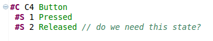

ComBE
Edit your Behavior Trees textually or graphically!
This project is maintained by oskarvanrest
Updates
5 July 2014:- Support for multiple requirement links (e.g. R1, R2, R3 C1 s1;; ...)
- Support for labels without operators (e.g. R1 C1 s1 someLabel;; ...)
- Improved font size for better readability
- Fixed several bugs and made ComBE compatible with the new Eclipse (Kepler, 4.3).
- Moved the update site (see download section).
- Slightly changed the textual syntax: requirement, component and behavior identifiers can now either be an integer (e.g. 1) or a non-integer (e.g. C1). Before this, requirements and component identifiers were non-integers while behavior identifiers were integers.
ComBE
ComBE provides an integrated textual and graphical editor for Behavior Trees. It synchronises text and graphics in real-time and allows you to switch between editors at any moment in time.
Features
ComBE comes with a rich set of features:Easy Integration
It is based on the same textual syntax that is used by other Behavior Engineering (BE) tools such as TextBE and the SAL model checker: it can read existing .bt files. Furthermore, underneath the editors is an EMF model, which makes it easy to integrate with other tools based on EMF.
Selection Sharing
When you select a node in the diagram, the corresponding text will be highlighted, and vice versa. So even if you prefer textual editing over graphical editing, you can still use the graphical editor to quickly look-up parts of your model and then switch to the textual editor to do the actual editing.

Error Checking
The textual editor shows errors when the syntax is incorrect, but also lets you know when there are duplicate definitions or unresolved references.
Reference Resolution
By holding Ctrl and clicking on a reference in the textual editor, your cursor will move to its definition.
Layout and Auto-layout
You can position the nodes in your diagram as you like, and possibly use grid-snapping to do so. Or, you can use the auto-layout feature that even allows you to auto-layout sub-trees.

Printing and Exporting
Diagrams can be printed directly from Eclipse. It's also possible to export your diagrams as GIF, BMP, JPEG, JPG, SVG, PNG or PDF.Visual Hiding
Both textual and graphical editors provide ways to visually hide parts of your model. Code Folding allows you to hide the states of components in which you are not interested at a particular moment in time. Hiding of a selection of nodes in the diagram is useful if you only want to print part of the Behavior Tree.
Comments and Sticky Notes
ComBE provides two ways of adding additional information to your model. You can either add comments to your code, or, add sticky notes to your diagram.

Download and installation
To install ComBE, all you need is JRE 7 or higher and a copy of Eclipse. Eclipse versions 4.2 to 4.4 are supported, but we recommend Eclipse Luna (4.4). Later version of Eclipse, like Eclipse Mars (4.5) are NOT supported. Download Eclipse Luna here. Choose for 'Eclipse Modeling Tools' (note: other packages should also work). Make sure that Eclipse detects the correct JRE (Window>Preferences>Java>Installed JREs) and that the JDK compliance level is set to 1.7 or higher (Window>Preferences>Java>Compiler).Then, install ComBE using the Eclipse update machanism: go to Help>Install New Software...>Add... and use name 'ComBE' and location http://oskarvanrest.nl/ComBE/update/ After installation, restart Eclipse. A warning will appear: 'Spoofax configuration warning'. Tick 'Don't warn me anymore until next Spoofax version' and press Ok.
Documentation
For a quick start:- Create a new project in Eclipse (File -> New... -> Project -> General -> Project)
- Copy the file gate.btc into the project
- Right-click on the file and choose "initialize bt_diagram diagram file", which will open the graphical editor
- Double click on gate.btc to open the textual editor and start the synchronization between text and graphics
- You can place the editors next to each other using drag-and-drop
- Textual and graphical editors only synchronize if textual (.btc) and graphical (.btc_diagram) files have the same name and are placed in the same directory
- New .btc and .btc_diagram files can also be created by choosing "File -> New... -> Other... -> Examples -> ComBE Diagram"
Resources
Robust Real-Time Synchronization between Textual and Graphical Editors:
- Paper (pdf)
- MSc Thesis
- Slides
- Poster
Issue Tracking
For bugs and feature requests: http://yellowgrass.org/project/ComBE